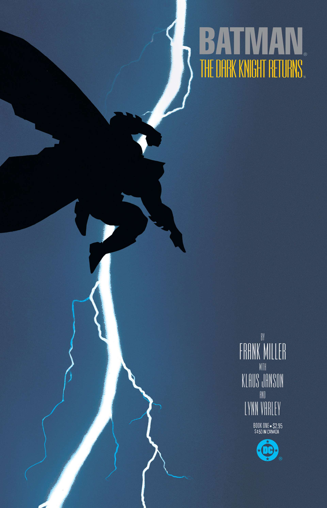

Batman: The Dark Knight Returns
Író: Frank Miller Kiadás: 1986
Frank Miller által írt 'Batman: The Dark Knight Returns' (1986) a sötét hangulatú, jövőbeli Gotham City-ben játszódó képregény, melyben az öregedő Batman visszatér, hogy szembeszálljon a bűnözéssel, és meghatározó alkotásnak számít a szuperhős műfajban.
Frank Miller

Foglalkozása: KépregényíróSzületett:1957
Élet és Munka: Frank Miller egy amerikai képregényíró és rajzoló. Híres az olyan sötét, neonoir és grafikus stílusáról. Híres Művei: Miller közismert a "Batman: Year One" és a "The Dark Knight Returns" című Batman-képregényekért, valamint az "Elektra: Assassin" és a "Sin City" sorozatokért. Örökség: Frank Miller munkássága nagy hatással volt a képregényekre, különösen a szuperhősképregények sötétebb és érettebb irányba való fejlődésében.